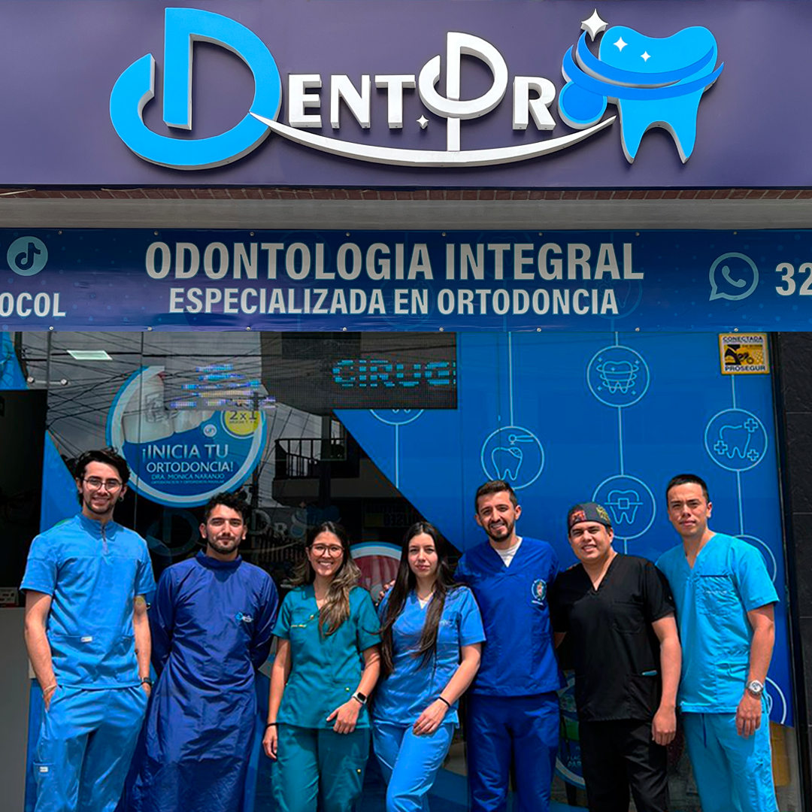

Team in scrubs, white tile, signage prominent. The reference image for any "about us" or team module. Color graded slightly cool — all blues, no green wash.
Don't: b&w, grain filters, dramatic lighting, or stock photos with warm tints.